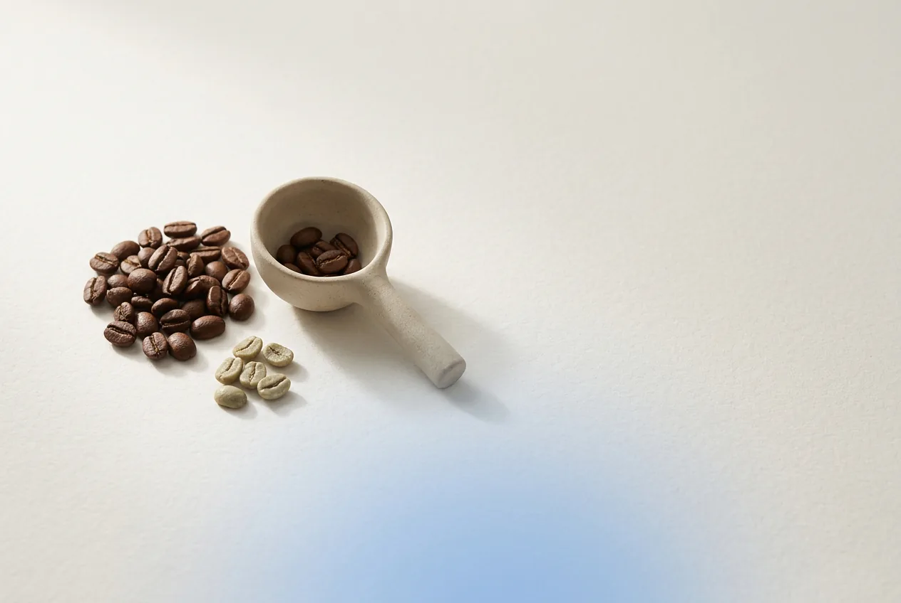

80+
Puntos en cata
Sin defectos en el grano y con un perfil de sabor limpio, medido con el protocolo SCA.
Nuestro café
El café de Focus es 100 % arábica de especialidad, tostado para filtro por tostadores de especialidad. Aquí te contamos qué significa eso y cómo lo elegimos.

Qué significa
Es el café que obtiene 80 puntos o más sobre 100 en una cata hecha con el protocolo de la Specialty Coffee Association (SCA). Detrás de esa nota hay tres cosas que se pueden comprobar:
80+
Sin defectos en el grano y con un perfil de sabor limpio, medido con el protocolo SCA.
1
Se sabe de qué país, región y finca viene cada lote, y cómo se procesó.
≤ 4
El café pierde aroma con el tiempo; por eso indicamos la fecha de tueste.
Del grano a la bolsa
Ficha de lote
Lote de ejemplo · proyecto académico. Cada bolsa real indicaría su lote.
En tu taza
Lo molemos para filtro: funciona en V60, Chemex o prensa francesa. En cafetera italiana también, aunque la molienda queda algo gruesa.
08:00
Mañana · concentración
Para las horas en que no puedes permitirte una distracción.
FAQ
Por ahora solo molido para filtro, que es como mejor funciona en el ritual de Focus.
Por su sabor suave y terroso, que redondea el café. Es un 5 % del blend y no añade cafeína. No hacemos promesas de salud.
No todos los lotes tienen certificado ecológico. Elegimos por puntuación, origen y frescura, y lo indicamos en la ficha de cada lote.
La de una taza de café de filtro: según el lote y la preparación, unos 80–100 mg por taza de 250 ml.